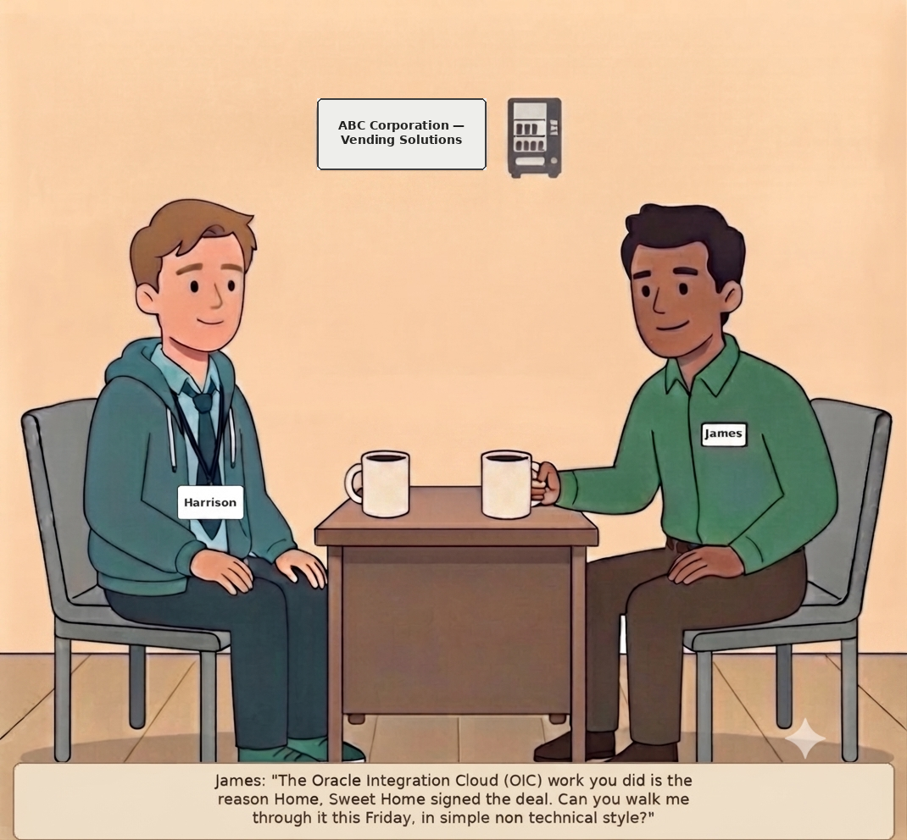
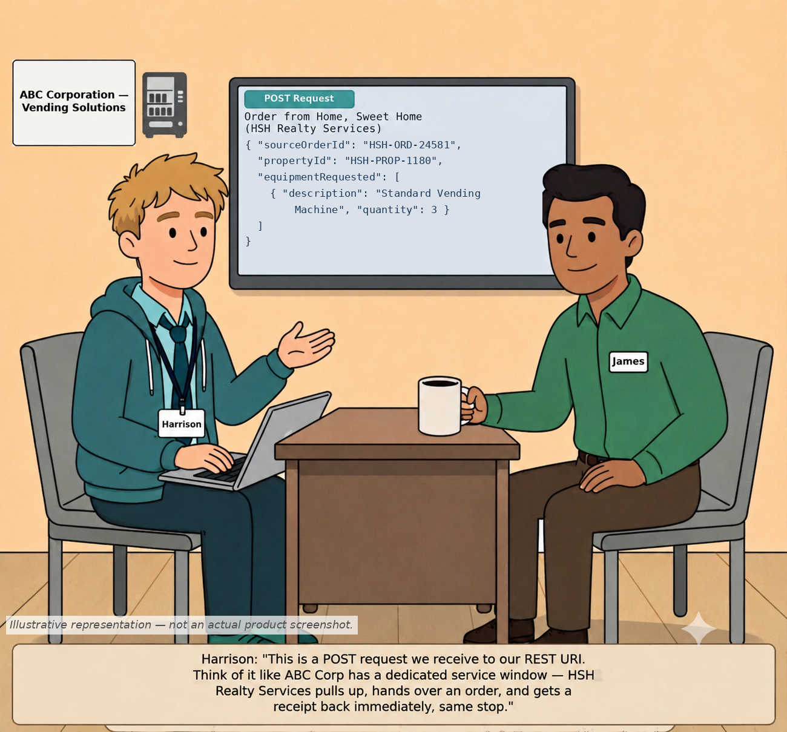
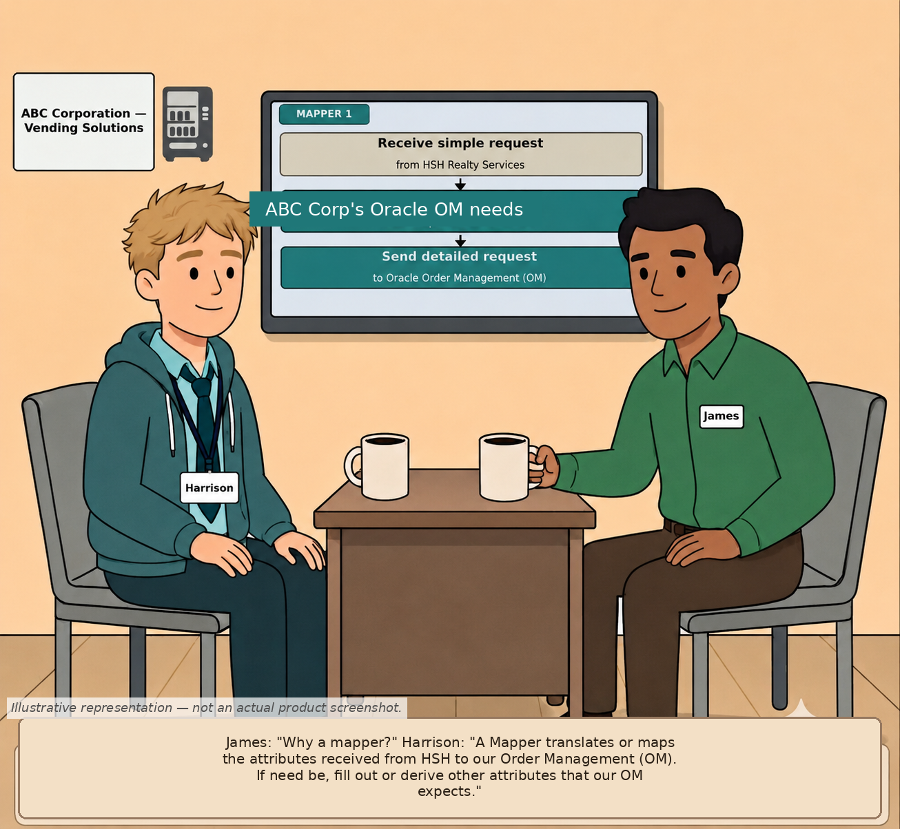
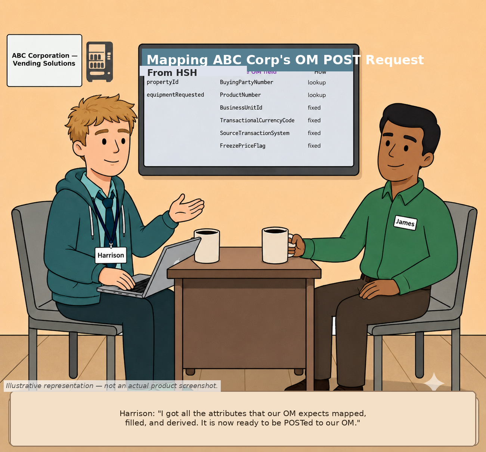
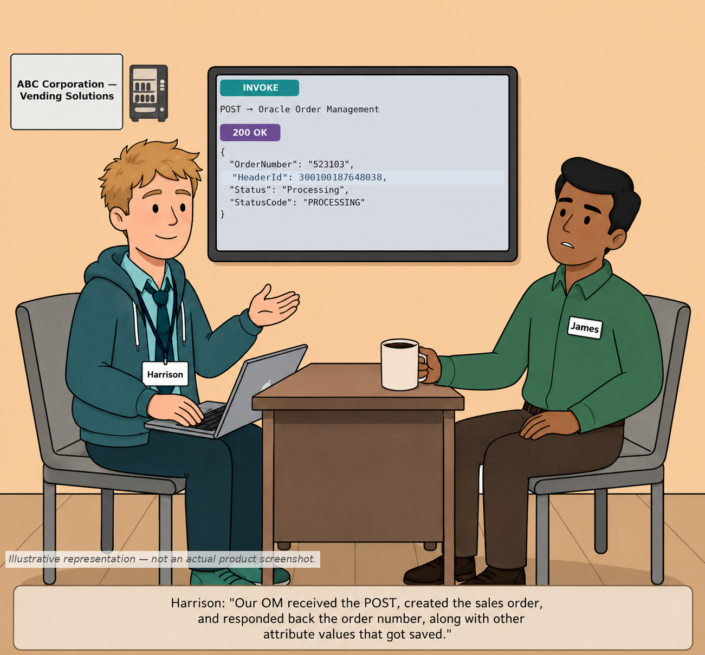
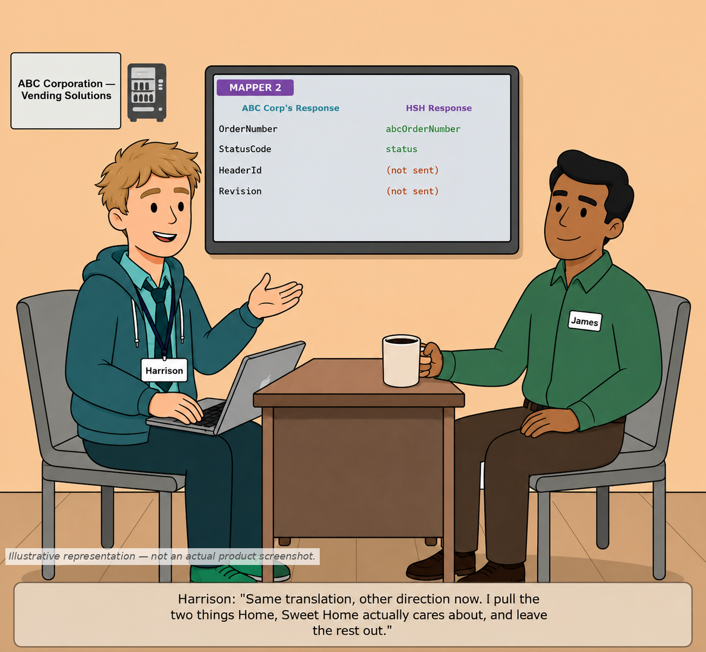
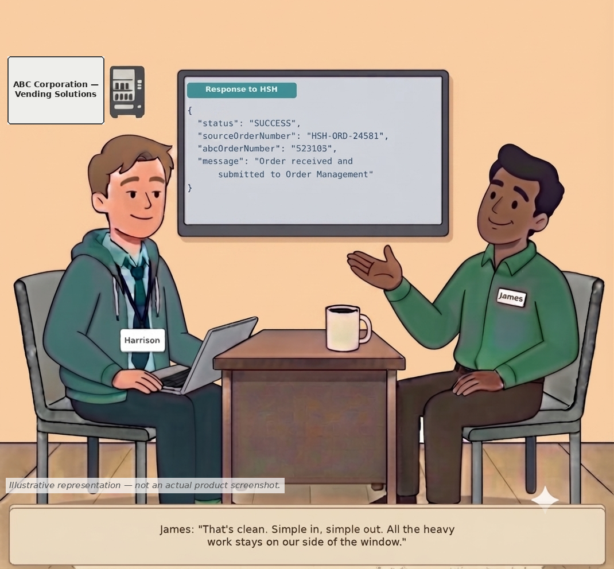
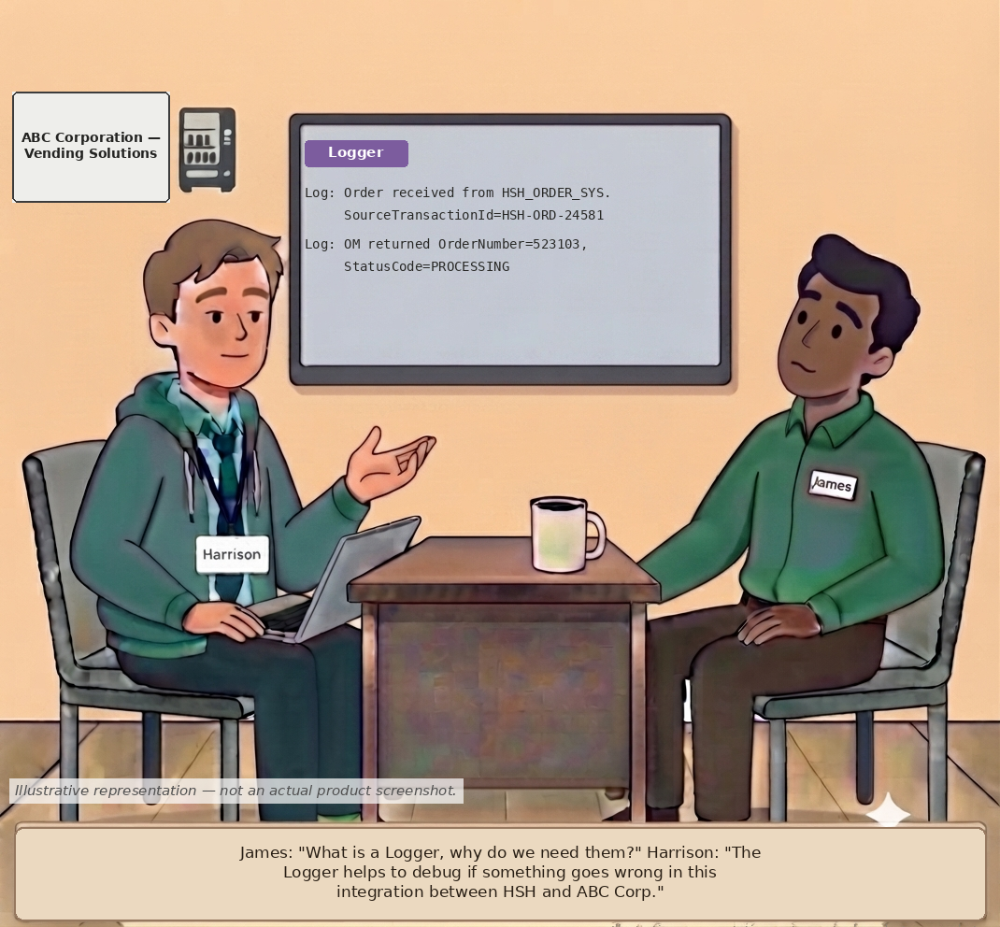
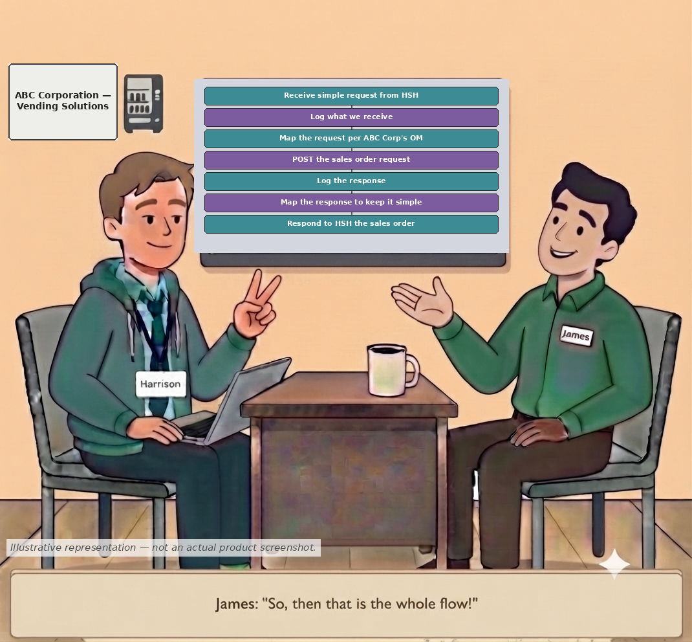

The Friday Debrief (OIC)
A 10-scene follow-up to "Oracle Integration Cloud." Harrison built the integration and James won the deal — now James needs to be able to explain how to people who won't read a line of JSON. This chapter follows Harrison walking James through the real build, entirely in plain language, using the actual payloads only as visual backup.
👥 Characters in This Chapter
Harrison — CS undergrad, rising junior, summer intern at ABC Corporation, explaining his own build back in business termsJames (GREEN shirt) — ABC Corporation Sales Rep, translating the technical win for his own stakeholders
BuyingPartyNumber,
ProductNumber, FreezePriceFlag,
SourceTransactionSystem, TransactionalCurrencyCode,
BusinessUnitId, OrderNumber,
HeaderId, StatusCode) are checked against
Oracle's published salesOrdersForOrderHub REST API
schema for Oracle Fusion Cloud Order Management. The on-screen
monitor mockups themselves are illustrative reconstructions, not
actual product screenshots — Oracle's UI and API details can change
across releases, so treat this chapter as educational rather than
a substitute for current Oracle documentation.
Scene 1 — The Assignment
Explain It Friday, No Code

📱 On mobile? Pinch to zoom to read the details clearly.
Scene 2 — The Service Window
One Request In, One Receipt Back

📱 On mobile? Pinch to zoom to read the details clearly.
Scene 3 — Mapper 1, the Concept
Why a Mapper Exists

📱 On mobile? Pinch to zoom to read the details clearly.
Scene 4 — Mapper 1, the Specifics
Lookups, Fixed Values, and What Each One Means

📱 On mobile? Pinch to zoom to read the details clearly.
propertyId and equipmentRequested are
resolved through live lookups into
BuyingPartyNumber and ProductNumber,
while BusinessUnitId,
TransactionalCurrencyCode,
SourceTransactionSystem, and
FreezePriceFlag are fixed values Order Management
needs but HSH's system never sends. Harrison confirms it's now
ready to POST.
Scene 5 — Invoking Order Management
Oracle Order Management Creates the Sales Order

📱 On mobile? Pinch to zoom to read the details clearly.
Scene 6 — Mapper 2, the Response
Translating the Response Back — On Purpose, Not Completely

📱 On mobile? Pinch to zoom to read the details clearly.
HeaderId and
Revision that mean nothing outside ABC's system.
Scene 7 — Responding to HSH
Simple In, Simple Out

📱 On mobile? Pinch to zoom to read the details clearly.
Scene 8 — The Logger
Why Log When OIC Already Tracks Every Run

📱 On mobile? Pinch to zoom to read the details clearly.
Scene 9 — The Whole Flow, in One Breath
Seven Steps, Start to Finish

📱 On mobile? Pinch to zoom to read the details clearly.
Scene 10 — Same Pattern, Every Customer
Does This Repeat for the Next Deal?
📱 On mobile? Pinch to zoom to read the details clearly.